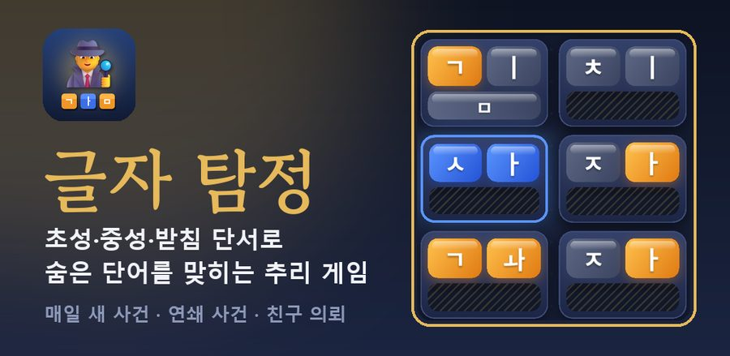
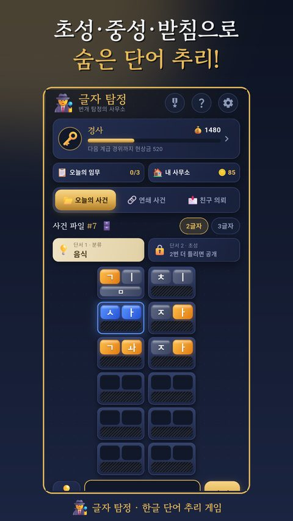
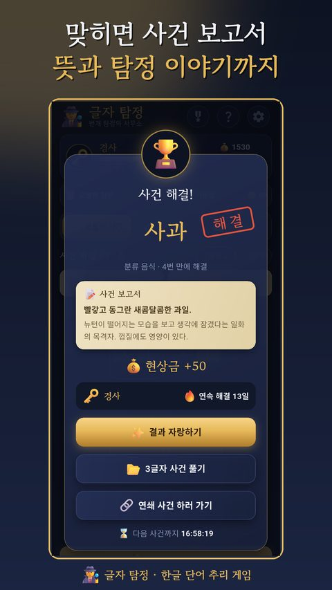

한글 워들, 초성 퀴즈 게임 하는 법과 잘 푸는 요령
영어 단어 게임 워들(Wordle)이 유행한 뒤로, 한글로 즐기는 단어 맞추기 게임도 많이 생겼습니다. 한글은 한 글자 안에 초성, 중성, 받침이 들어 있어서 영어보다 단서가 많고, 하나씩 좁혀 가는 재미가 큽니다. 처음 하는 분을 위해 기본 규칙과 잘 푸는 요령을 정리했습니다.
기본 규칙
숨은 단어를 추측해서 넣으면, 글자마다 맞았는지 색으로 알려 줍니다.
| 색 | 뜻 |
|---|---|
| 파랑 | 그 자리에 딱 맞음 |
| 주황 | 단어 어딘가에 들어 있지만 자리가 다름 |
| 회색 | 단어에 없음 |
한글 게임은 이 색을 초성, 중성, 받침 각각에 따로 보여 주는 경우가 많습니다. 예를 들어 첫 글자의 초성은 맞았는데 모음이 틀렸다면, 자음만 파랗게 표시됩니다.
잘 푸는 요령 5가지
1. 첫 단어는 자주 쓰는 자음으로
ㄱ, ㄴ, ㅅ, ㅇ처럼 많이 쓰이는 자음과 ㅏ, ㅣ 같은 흔한 모음이 들어간 단어로 시작하면 단서를 많이 얻습니다.
2. 받침이 있는지부터 봅니다
받침이 있는 칸과 없는 칸만 알아도 후보 단어가 크게 줄어듭니다.
3. 회색 자모는 다시 쓰지 않습니다
없다고 나온 자음과 모음은 다음 단어에서 빼야 단서를 더 빨리 모읍니다.
4. 주황은 자리를 옮겨 봅니다
주황은 "있긴 한데 여기가 아니다"라는 뜻입니다. 다른 칸에 넣어 보면 자리가 빠르게 확정됩니다.
5. 막히면 단어 종류부터 떠올립니다
음식인지, 동물인지, 장소인지 범위를 정하면 머릿속 단어 목록이 훨씬 짧아집니다.
매일 새 사건이 열리는 글자 탐정

퇴근후랩이 만든 글자 탐정은 위 규칙으로 2글자, 3글자 한글 단어를 맞히는 추리 게임입니다.
- 받침이 없는 칸은 처음부터 빗금으로 보여 줘서, 단어 모양부터 짐작할 수 있습니다.
- 3번 틀리면 단어 종류, 5번 틀리면 초성 단서가 열려 처음 하는 분도 끝까지 풀 수 있습니다.
- 매일 모두가 같은 문제를 풀고, 정답이 드러나지 않는 색 네모로 결과를 겨룰 수 있습니다.
- 맞히면 단어의 뜻과 짧은 탐정 이야기가 담긴 사건 보고서가 나옵니다.


하루 5분 머리를 깨우는 두뇌 게임으로, 부모님이나 아이와 함께 즐기기에도 좋습니다.